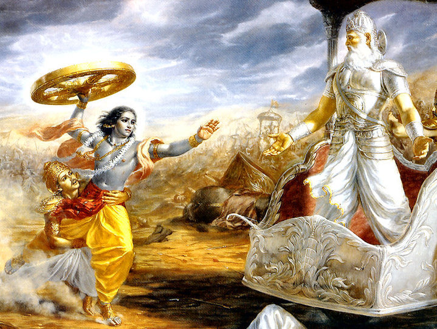

🔷 अध्याय का परिचय
भीष्म पर्व महाभारत का छठा प्रमुख पर्व है, जिसमें कुरुक्षेत्र युद्ध का आरंभ होता है। इस पर्व में युद्धभूमि की रणनीतियाँ, सेनाओं का संगठन, धर्म-अधर्म की सीमाएं और भगवान श्रीकृष्ण द्वारा अर्जुन को उपदेशित श्रीमद्भगवद्गीता प्रमुख रूप से वर्णित हैं। भीष्म पितामह कौरवों के सेनापति बनते हैं और युद्ध के पहले दस दिनों तक अद्भुत वीरता का प्रदर्शन करते हैं।
🔷 प्रमुख विषय
- कुरुक्षेत्र युद्ध का प्रारंभ
- पांडवों और कौरवों की सेनाओं का गठन
- अर्जुन का मोह और उसका आत्मद्वंद्व
- श्रीकृष्ण द्वारा श्रीमद्भगवद्गीता का उपदेश
- भीष्म का नेतृत्व और दस दिनों का युद्ध
- शिखंडी की भूमिका और भीष्म का शरशय्या पर गिरना
⚔️ अध्याय 6 – भीष्म पर्व | भाग 1 – धर्मयुद्ध की भूमिका
🔶 युद्ध की घोषणा और कुरुक्षेत्र की ओर प्रस्थान
पांडवों और कौरवों के बीच वर्षों से चला आ रहा वैर अब अपने चरम पर पहुँच चुका था। सभी शांति प्रयास असफल हो गए। श्रीकृष्ण स्वयं शांति का प्रस्ताव लेकर हस्तिनापुर पहुँचे थे, परंतु दुर्योधन ने अहंकारवश उन्हें बंदी बनाने तक का प्रयास किया। अब धर्म और अधर्म के बीच अंतिम निर्णय के लिए कुरुक्षेत्र को रणभूमि चुना गया।
यह भूमि कभी तपोभूमि थी, अब युद्धभूमि बनने जा रही थी। ऋषियों ने चेताया, विदुर ने समझाया, परंतु समय को रोकना किसी के वश में न था। समस्त आर्यावर्त की सेना दो पक्षों में बँट चुकी थी – एक ओर धर्म के रक्षक पांडव, दूसरी ओर अधर्म की जिद में डूबे कौरव।

🔶 भीष्म का सेनापति बनना
दुर्योधन ने सभा में ऐलान किया कि वह ऐसे योद्धा को कौरवों का सेनापति बनाएगा जो सबसे पराक्रमी, धर्मनिष्ठ और अनुभवशील हो। सभी की दृष्टि स्वयमेव भीष्म पितामह पर जा टिकी। उन्होंने शर्त रखी – "जब तक मैं शस्त्र उठाने में समर्थ हूँ, मैं कौरवों की ओर से युद्ध करूँगा, किंतु शिखंडी पर अस्त्र न उठाऊँगा।"
यह शर्त पांडवों के लिए एक संकेत थी। भविष्य के युद्ध का परिणाम इसी निर्णय पर टिका था। दुर्योधन ने प्रसन्न होकर भीष्म को प्रधान सेनापति घोषित किया और युद्ध की योजना बनाई जाने लगी।
🔶 अर्जुन का मोह और युद्ध के पहले दिन का दृश्य
युद्ध की घोषणा हो चुकी थी। पांडव पक्ष की ओर से श्रीकृष्ण ने स्वयं अर्जुन का सारथ्य स्वीकार किया। रणभूमि में जब दोनों पक्ष आमने-सामने खड़े हुए, तब अर्जुन ने अपने रथ को दोनों सेनाओं के मध्य ले जाने का अनुरोध किया।
वहाँ खड़े अपने गुरु, अपने पितामह, अपने सगे संबंधियों को देखकर अर्जुन का मन विचलित हो उठा। वह सोच में पड़ गया – क्या ऐसे युद्ध में विजय का कोई मूल्य है, जहाँ अपनों का रक्त बहाना पड़े?
📜 संस्कृत श्लोक (भगवद्गीता 1.28–30):
दृष्ट्वेमं स्वजनं कृष्ण युयुत्सुं समुपस्थितम्।
सीदन्ति मम गात्राणि मुखं च परिशुष्यति ॥ 1.28 ॥
वेपथुश्च शरीरे मे रोमहर्षश्च जायते।
गाण्डीवं स्रंसते हस्तात्त्वक्चैव परिदह्यते ॥ 1.29 ॥
न च शक्नोम्यवस्थातुं भ्रमतीव च मे मनः।
निमित्तानि च पश्यामि विपरीतानि केशव ॥ 1.30 ॥
अर्जुन की यह मानसिक स्थिति दर्शाती है कि युद्ध केवल बाह्य नहीं होता, वह भीतर भी चलता है। जब अपने ही सामने हों, तो धर्म और कर्तव्य का निर्धारण अत्यंत कठिन हो जाता है।
🔶 श्रीकृष्ण द्वारा अर्जुन को गीता का उपदेश प्रारंभ
श्रीकृष्ण ने अर्जुन को शांत किया और कहा – "यह समय मोह का नहीं, कर्तव्य का है। धर्म की रक्षा हेतु युद्ध से विमुख होना पलायन है।" इसी संवाद से प्रारंभ होती है **श्रीमद्भगवद्गीता** – महाभारत का आध्यात्मिक और दार्शनिक स्तंभ।
उन्होंने आत्मा की अमरता, कर्म का सिद्धांत और निष्काम भाव से कर्म करने का महत्व अर्जुन को समझाया। गीता का यह संवाद केवल अर्जुन के लिए नहीं, मानवता के लिए शाश्वत उपदेश बन गया।
📜 संस्कृत श्लोक (भगवद्गीता 2.11):
अशोच्यानन्वशोचस्त्वं प्रज्ञावादांश्च भाषसे।
गतासूनगतासूंश्च नानुशोचन्ति पण्डिताः ॥
श्रीकृष्ण का संदेश था – "जो ज्ञानी हैं, वे न जीवित की चिंता करते हैं, न मृत की। आत्मा न मरती है, न जन्म लेती है।" इस प्रकार गीता के पहले दो अध्यायों में आत्मा, कर्म, और ज्ञान का विस्तृत विवेचन किया गया।
अर्जुन धीरे-धीरे मोह से बाहर आने लगता है और उसका मन दृढ़ता की ओर अग्रसर होता है। वह कहता है – "अब मैं शिष्य हूँ, मुझे उचित मार्ग बताइए।"
📜 संस्कृत श्लोक (भगवद्गीता 2.7):
कार्पण्यदोषोपहतस्वभावः पृच्छामि त्वां धर्मसंमूढचेताः।
यच्छ्रेयः स्यान्निश्चितं ब्रूहि तन्मे शिष्यस्तेऽहं शाधि मां त्वां प्रपन्नम् ॥
यह अर्जुन का आत्मसमर्पण था – जब एक योद्धा शिष्य बनकर ज्ञान के लिए झुकता है। यही गीता के मूल तत्व की शुरुआत है – **"ज्ञान के बिना शक्ति अधूरी है।"**
📜 अध्याय 6 – भीष्म पर्व | भाग 2 – गीता का तत्वज्ञान
🔶 कर्म का महत्व – कर्मयोग का उपदेश (अध्याय 3)
श्रीकृष्ण अर्जुन से कहते हैं – “केवल ज्ञान से मुक्ति नहीं मिलती, जब तक मनुष्य निष्काम भाव से अपने कर्तव्य का पालन न करे।” वे बताते हैं कि यज्ञ भावना से किया गया कर्म ही लोक कल्याण की ओर ले जाता है।
अर्जुन पूछता है – “यदि ज्ञान श्रेष्ठ है, तो फिर युद्ध क्यों?” श्रीकृष्ण उत्तर देते हैं – “ज्ञान श्रेष्ठ है, पर बिना कर्म के ज्ञान व्यर्थ है।”
📜 श्लोक (गीता 3.8):
नियतं कुरु कर्म त्वं कर्म ज्यायो ह्यकर्मणः।
शरीरयात्रापि च ते न प्रसिद्ध्येदकर्मणः ॥
अर्थात – “अपने नियत कर्म को करो, क्योंकि कर्म अकर्म से श्रेष्ठ है।” यही कर्मयोग का मूल भाव है – फल की इच्छा त्यागकर कर्तव्य का पालन करना।
🔶 ज्ञान का विवेचन – ज्ञानयोग और आत्मा की पहचान (अध्याय 4)
श्रीकृष्ण अर्जुन को दिव्य ज्ञान देते हुए कहते हैं कि यह ज्ञान सूर्य को, मनु को, और फिर पृथ्वी पर ऋषियों को दिया गया। अब वह वही ज्ञान अर्जुन को दे रहे हैं।
वे स्वयं को भगवान के रूप में प्रकट करते हैं – “जब-जब धर्म की हानि और अधर्म की वृद्धि होती है, मैं अवतार लेता हूँ।”
📜 श्लोक (गीता 4.7–8):
यदा यदा हि धर्मस्य ग्लानिर्भवति भारत।
अभ्युत्थानमधर्मस्य तदाऽअत्मानं सृजाम्यहम् ॥ 4.7 ॥
परित्राणाय साधूनां विनाशाय च दुष्कृताम्।
धर्मसंस्थापनार्थाय सम्भवामि युगे युगे ॥ 4.8 ॥
इस दिव्य उद्घोषणा के साथ श्रीकृष्ण अर्जुन को यह भी समझाते हैं कि आत्मा न कभी जलती है, न कटती है, न मरती है। यह ज्ञान आत्मा के अमर स्वरूप को दर्शाता है।
🔶 निष्काम कर्म और समत्व – कर्म-संन्यास योग (अध्याय 5)
अर्जुन पूछता है – “क्या कर्म श्रेष्ठ है या संन्यास?” श्रीकृष्ण उत्तर देते हैं – “दोनों मार्ग सत्य हैं, पर निष्काम भाव से कर्म करना अधिक श्रेष्ठ है, क्योंकि उसमें अहंकार नहीं होता और वह लोकहित में होता है।”
वे कहते हैं – “जो समत्व में स्थित है, न लाभ से हर्षित होता है, न हानि से दुखी – वही स्थिर बुद्धि योगी है।”
📜 श्लोक (गीता 5.18):
विद्याविनयसम्पन्ने ब्राह्मणे गवि हस्तिनि।
शुनि चैव श्वपाके च पण्डिताः समदर्शिनः ॥
अर्थात – “जो ब्राह्मण, गाय, हाथी, कुत्ता और चांडाल में समदृष्टि रखे – वही सच्चा ज्ञानी है।” यह अध्याय वैराग्य और दया का भाव सिखाता है।
🔶 आत्मविजय का मार्ग – ध्यानयोग (अध्याय 6)
श्रीकृष्ण अर्जुन को ध्यानयोग का मार्ग बताते हैं – “जो अपने मन को जीत लेता है, वह सखा है; और जो हार जाता है, वह शत्रु।” वे सिखाते हैं कि साधक को संयम से, नियमित अभ्यास से, एकाग्र चित्त से आत्मा का साक्षात्कार करना चाहिए।
वे बताते हैं कि ध्यानस्थ योगी जो समदर्शी है, वह सभी प्राणियों में आत्मा को देखता है और सबके प्रति करुणा रखता है। इस अवस्था को 'योग' कहते हैं – परम संतुलन।
📜 श्लोक (गीता 6.6):
बन्धुरात्मात्मनस्तस्य येनात्मैवात्मना जितः।
अनात्मनस्तु शत्रुत्वे वर्तेतात्मैव शत्रुवत् ॥
श्रीकृष्ण यह भी कहते हैं कि जिसने तप किया हो, जिसने ज्ञान अर्जित किया हो – वह योगी सबसे श्रेष्ठ है। और जो योगी प्रेमपूर्वक भगवान में मन लगाता है, वह सर्वोच्च है।
📜 श्लोक (गीता 6.47):
योगिनामपि सर्वेषां मद्गतेनान्तरात्मना।
श्रद्धावान्भजते यो मां स मे युक्ततमो मतः ॥
🔶 अर्जुन का आत्मबल जाग्रत होता है
श्रीकृष्ण के वचनों ने अर्जुन के भीतर छिपे धर्मबोध को जाग्रत कर दिया। वह समझ जाता है कि यह युद्ध केवल सिंहासन के लिए नहीं, बल्कि धर्म की स्थापना के लिए है। मोह और दुख को त्यागकर, वह युद्ध के लिए तैयार होता है।
गीता के छठे अध्याय के अंत तक अर्जुन के हृदय में स्थिरता, श्रद्धा और आत्मबल लौट आता है। वह कहता है – “अब मैं सशंक नहीं हूँ। मैं युद्ध करूँगा।” श्रीकृष्ण मुस्कराते हैं – क्योंकि यही था उनका उद्देश्य।
यहीं से भीष्म पर्व में गीता का उपदेश समाप्त होता है, और वास्तविक युद्ध की गाथा आरंभ होती है।
🔥 अध्याय 6 – भीष्म पर्व | भाग 3 – युद्ध की ज्वाला और भीष्म का पतन
🔶 कुरुक्षेत्र में धर्मयुद्ध का आरंभ
श्रीकृष्ण के उपदेशों से प्रेरित अर्जुन ने गांडीव उठाया। दोनों सेनाओं के शंखनाद से दिशाएं गूंज उठीं। कौरवों की सेना में भीष्म पितामह अग्रणी सेनापति के रूप में आगे बढ़े, जबकि पांडवों के ध्वज के आगे श्रीकृष्ण स्वयं सारथी बने।
पहले दिन से युद्ध भयंकर था। भीष्म ने पांडवों की सेना को गहरी क्षति पहुंचाई। अभिमन्यु, द्रौपदी के पुत्र, और पांडव स्वयं भी भीष्म की मारक दृष्टि से भयभीत थे। युद्ध का प्रत्येक दिन नई कहानी कहता – वीरता, बलिदान और हाहाकार।
🔶 युद्ध के पहले दस दिन – अपराजेय भीष्म
दस दिनों तक भीष्म किसी को जीतने नहीं दे रहे थे। हर दिन वह कौरवों की सेना को उत्साहित करते और पांडवों को पीछे हटने को मजबूर कर देते। उनकी धनुर्विद्या, उनकी ऊर्जा, और उनका अनुभव युद्धभूमि को नियंत्रित कर रहा था।
युधिष्ठिर स्वयं भीष्म के पास जाकर पूछते हैं – “पितामह, हमें बताइए कि आपको कैसे हराया जा सकता है?” भीष्म उत्तर देते हैं – “जब मैं स्त्री या स्त्री-स्वरूप योद्धा के सामने खड़ा रहूँ, तब मुझ पर अस्त्र चलाया जा सकता है।”
यह संकेत था – शिखंडी की ओर। शिखंडी, जो पूर्व जन्म में अम्बा थे, भीष्म की प्रतिज्ञा के कारण अपना जीवन खो चुके थे, अब पुरुष योद्धा बन कर लौटे थे, केवल प्रतिशोध के लिए।
🔶 शिखंडी की योजना और अर्जुन का संकल्प
पांडवों ने युद्ध के दसवें दिन योजना बनाई – शिखंडी रथ के आगे रहेगा, उसके पीछे अर्जुन। भीष्म, शिखंडी को देख कर, हथियार नहीं उठाएंगे और उसी क्षण अर्जुन अपने बाणों से उन्हें घायल करेंगे।
ठीक वैसा ही हुआ – शिखंडी के रथ को सामने पाकर भीष्म ने शस्त्र नीचे कर दिए। अर्जुन ने गांडीव से वह वर्षा की जो आकाश को ढक दे। हजारों बाणों से भीष्म के शरीर को ढक दिया गया। वह शरशय्या (बाणों की शैय्या) पर गिर पड़े।
उनका शरीर धरती को स्पर्श नहीं करता था – केवल बाणों पर टिके हुए। यह दृश्य देवताओं तक को विचलित कर गया। रणभूमि में सन्नाटा छा गया। दोनों सेनाएँ उनके चरणों में श्रद्धा से झुक गईं।
🔶 भीष्म की वाणी और अमर प्रतीक्षा
भीष्म ने जल माँगा – अर्जुन ने बाणों से पृथ्वी को वेधा और जल फूटा। वह बोले – “अब मैं सूर्य के उत्तरायण होने तक पृथ्वी को नहीं त्यागूँगा।” यह उनका इच्छामृत्यु का वरदान था।
पांडव उनके पास बैठकर नीति, धर्म, राज्य और न्याय की शिक्षा लेते रहे। युधिष्ठिर को धर्मराज बनाने से पहले उन्हें धर्म की गहराई भीष्म से ही मिली।
कौरवों की सेना में हाहाकार मच गया – सेनापति गिर चुका था। दुर्योधन स्तब्ध रह गया। अब अगला सेनापति कौन होगा? यही प्रश्न सबके सामने था।
🔶 युद्ध का नया चरण – भीष्म के बाद की अनिश्चितता
भीष्म का पतन केवल एक योद्धा का नहीं, एक युग का अंत था। उनके जाने के बाद युद्ध और अधिक उग्र और क्रूर होता गया। पर इस क्षण तक, भीष्म पर्व ने युद्ध के धर्म, कर्तव्य, और आत्मबल का सर्वोच्च उदाहरण प्रस्तुत किया।
गीता का उपदेश और भीष्म की शरशय्या – ये दोनों दृश्य भारतीय संस्कृति के दो स्तंभ बन गए, जो हमें सिखाते हैं – “कभी कर्तव्य से पीछे मत हटो, और जब समय आए तो धर्म के लिए झुको नहीं।”
🛡️ अध्याय 6: भीष्म पर्व – भाग 4
🎯 अर्जुन का संकल्प और कौरवों की घेराबंदी
श्रीकृष्ण के उपदेश के पश्चात अर्जुन में अद्भुत तेज भर गया। उसने गांडीव उठाया और रथ को अग्रसर किया। कौरवों की विशाल सेना को देखते हुए भी अर्जुन के मन में भय या संशय की कोई छाया नहीं रही। चारों ओर रणभेरी बज उठी, और श्रीकृष्ण ने पाञ्चजन्य शंख फूँका। अर्जुन ने देवदत्त शंख ध्वनित किया।
पांडवों की सेना ने उत्साह और निष्ठा के साथ आक्रमण प्रारंभ किया। अर्जुन ने विशेष रूप से भीष्म पितामह की ओर रथ मोड़ा। उनके सामने आते ही महाभारत के युद्ध की उग्रता अपने चरम पर पहुँचने लगी।
🔥 युद्ध का विकराल रूप
अब युद्ध केवल अस्त्र-शस्त्र का नहीं, बल्कि प्रतिज्ञाओं, गौरव और धर्म के लिए लड़ा जा रहा था। अर्जुन ने एक साथ सौ से अधिक तीरों से कौरव पक्ष के महारथियों पर प्रहार किया। भीष्म पितामह ने भी अपनी अपार वीरता का परिचय देते हुए पांडवों की सेना को रोका और उसे छिन्न-भिन्न किया।
सैकड़ों सेनानी गिर पड़े, हाथियों की चिंघाड़ और घोड़ों की हिनहिनाहट के बीच युद्ध भूमि रक्त से लाल हो गई। भीष्म ने द्रोण, कृपाचार्य, अश्वत्थामा और अन्य योद्धाओं के साथ मिलकर अर्जुन को रोकने का प्रयास किया, परंतु अर्जुन ने उनके सभी प्रयासों को विफल कर दिया।
🩸 पितामह पर प्रहार
सातवें दिन युद्ध में अर्जुन ने दृढ़ संकल्प लिया कि वह भीष्म पितामह को भूमि पर गिराए बिना पीछे नहीं हटेगा। उसने शिखंडी को रथ के आगे खड़ा किया। शिखंडी को भीष्म ने स्त्री समझकर युद्ध में लक्ष्य नहीं बनाया था। अर्जुन ने इस स्थिति का लाभ उठाया।
अर्जुन ने शिखंडी की आड़ लेकर सैकड़ों बाणों से भीष्म पितामह पर प्रहार किया। उनके शरीर में इतने बाण लगे कि वह भूमि पर नहीं गिरे, बल्कि बाणों की शैया पर स्थिर हो गए। यह दृश्य देखकर संपूर्ण रणभूमि स्तब्ध रह गई।
भीष्म बोले –
“अब मैं युद्ध से विराम लेता हूँ। जब तक सूर्य दक्षिणायन में रहेगा, मैं देह का त्याग नहीं करूँगा।”
🪔 बाणों की शैया पर धर्मोपदेश
भीष्म पितामह बाणों की शैया पर लेटे हुए धर्म और नीतियों का उपदेश देने लगे। उन्होंने युद्ध की मर्यादा, राजधर्म, नीतिधर्म, स्त्रीधर्म और प्रजापालन जैसे विषयों पर गहन विचार प्रस्तुत किए।
युधिष्ठिर ने विनम्रता से उनसे प्रश्न किए और भीष्म ने शांति पर्व की नींव उन्हीं उपदेशों से रखी। उन्होंने यह भी कहा कि धर्म का अनुसरण करना राजा का प्रमुख कर्तव्य है, और उसी से राज्य की समृद्धि संभव है।
📿 कुछ प्रमुख श्लोक (संक्षेप में)
धर्म एव हतो हन्ति धर्मो रक्षति रक्षितः। तस्माद्धर्मो न हन्तव्यो मा नो धर्मो हतोऽवधीत्॥
अर्थ: जो धर्म की रक्षा करता है, वही धर्म उसकी रक्षा करता है। इसलिए धर्म का कभी त्याग नहीं करना चाहिए।
🌅 सूर्य के उत्तरायण होने की प्रतीक्षा
युद्ध रुक गया। सभी योद्धा भीष्म के समीप उपस्थित हुए और उनका आशीर्वाद प्राप्त किया। भीष्म सूर्य के उत्तरायण होने की प्रतीक्षा कर रहे थे। उन्होंने कहा कि आत्मा अनंत है, और केवल उचित समय पर ही देह त्याग करना चाहिए।
श्रीकृष्ण ने स्वयं भीष्म की प्रशंसा की और कहा – "आप महाभारत के स्तम्भ हैं।"
यह भाग यहीं समाप्त होता है, और अगला भाग बताएगा कि कैसे भीष्म की मृत्यु के पश्चात युद्ध की दिशा बदल गई।
📜 अध्याय 6 – भीष्म पर्व | भाग 5
🌟 अर्जुन को विराट रूप का दर्शन
श्रीकृष्ण ने अर्जुन को दिव्य चक्षु प्रदान किया। तभी अर्जुन ने वह अद्भुत विराट रूप देखा — जिसमें अनगिनत मुख, अनगिनत नेत्र, दिव्य आभूषणों से युक्त देदीप्यमान शरीर, अनेक शस्त्रों का संचालन करने वाले अनंत भुजाएं दिखाई दीं।
भगवान के मुख से अग्नि की ज्वालाएँ निकल रही थीं। उनके रूप में सम्पूर्ण ब्रह्माण्ड समाहित था — चर-अचर, देव-दानव, ऋषि-मुनि, पशु-पक्षी, सभी उनमें समाये हुए प्रतीत हो रहे थे। अर्जुन विस्मय से स्तब्ध खड़ा था।
अर्जुन ने देखा कि कौरवों के योद्धा, भीष्म, द्रोण, कर्ण, और अन्य नायकों सहित सभी, भगवान के मुख में प्रवेश कर रहे हैं, जैसे पतंगे अग्नि में समा जाते हैं। यह रूप भयानक भी था और दिव्य भी।
🙏 अर्जुन की स्तुति और भय
अर्जुन अत्यंत विस्मित हुआ। उसने कांपते स्वर में भगवान श्रीकृष्ण की स्तुति की:
"आप आदिदेव, अजन्मा, अनंत रूपधारी हैं। आप ही सृष्टि के कारण हैं। न तो मैं आपकी आदि जानता हूँ, न मध्य और न अंत।"
किन्तु जैसे-जैसे वह भगवान का विराट रूप देखता गया, वैसे-वैसे उसका भय बढ़ता गया। उसने विनती की:
"हे देव, मैं आपसे भयभीत हूँ। कृपया फिर से वही स्नेहपूर्ण चतुर्भुज रूप धारण करें, जिससे मैं आपकी शरण में आ सकूं।"
🕉️ भगवान का उत्तर और दिव्य रूप की वापसी
श्रीकृष्ण ने मधुर वाणी में कहा:
"हे अर्जुन, यह मेरा विराट रूप अत्यंत दुर्लभ है। इसे न तो वेदों के अध्ययन से, न तप से, न दान से, और न ही यज्ञों से देखा जा सकता है। केवल भक्तियोग से ही यह संभव है।"
तत्पश्चात भगवान ने पुनः अपने चतुर्भुज रूप में प्रवेश किया और फिर धीरे-धीरे अर्जुन को अपने मूल मानवी रूप में दर्शन दिए। अर्जुन ने चैन की सांस ली।
⚖️ धर्म और युद्ध का मर्म
श्रीकृष्ण ने अर्जुन को समझाया:
"कर्म ही तेरा धर्म है। फल की चिंता न कर, युद्ध कर। तू केवल निमित्त मात्र है।"
भगवान ने यह भी कहा कि युद्ध में जो मृत्यु को प्राप्त होंगे वे वीरगति को प्राप्त होंगे और जो जीतेंगे वे राज्य का सुख भोगेंगे। इसलिए किसी भी स्थिति में अर्जुन का कर्तव्य युद्ध करना ही है।
अर्जुन अब संपूर्णतः स्पष्ट हो चुका था। वह कृष्ण के चरणों में गिरा और बोला:
"हे माधव, आपकी शरण में आकर मुझे अपने कर्तव्य का बोध हुआ। मेरी मोह की गांठ अब टूट गई है। मैं युद्ध करूंगा!"
📜 युद्ध की ओर वापसी
अर्जुन ने श्रीकृष्ण की आज्ञा का पालन करने का संकल्प लिया और रथ पर चढ़कर धनुष उठाया। युद्धभूमि की ओर उसका मन अब स्थिर और संकल्पित था।
इस प्रकार, अर्जुन के जीवन का सबसे बड़ा द्वंद्व समाप्त हुआ और वह धर्म युद्ध की दिशा में आगे बढ़ा।
📜 अध्याय 6 – भीष्म पर्व | भाग 6
🔚 भीष्म की गिरावट के बाद का प्रभाव
भीष्म के शरशय्या पर गिरते ही युद्धभूमि पर एक विचित्र सन्नाटा छा गया। पांडव और कौरव दोनों पक्षों में एक क्षणिक ठहराव आया। यह घटना केवल एक वीर योद्धा के पतन की नहीं, बल्कि धर्म और कर्तव्य के एक युग के अंत की प्रतीक थी। पांडवों के लिए यह विजय की शुरुआत थी, परंतु उन्हें यह भी ज्ञात था कि युद्ध अभी समाप्त नहीं हुआ है।
🕊️ श्रीकृष्ण की रणनीति और मार्गदर्शन
श्रीकृष्ण ने अर्जुन और अन्य पांडवों को प्रेरित किया कि वे धर्म की रक्षा हेतु पूरे साहस से आगे बढ़ें। उन्होंने कहा —
"धर्मो रक्षति रक्षितः। यदि तुम धर्म की रक्षा करोगे, तो वही धर्म तुम्हारी रक्षा करेगा।"
श्रीकृष्ण ने स्पष्ट किया कि यह युद्ध केवल सत्ता के लिए नहीं, बल्कि धर्म और अधर्म के मध्य संघर्ष था, और इसमें उन्हें विजय अवश्य प्राप्त करनी है। श्रीकृष्ण ने अर्जुन को पुनः प्रेरणा दी और समस्त सेनाओं को अनुशासित रूप में अगली योजनाओं हेतु तैयार किया।
🌌 श्रीकृष्ण का विराट रूप
युद्ध के दौरान अर्जुन को जब संशय होने लगा, तब श्रीकृष्ण ने अपना विराट रूप प्रकट किया। वह स्वरूप इतना भव्य था कि अर्जुन की दृष्टि स्थिर नहीं रह सकी। उन्होंने श्रीकृष्ण के चरणों में सिर झुका दिया।
"त्वमेव माता च पिता त्वमेव, त्वमेव बन्धुश्च सखा त्वमेव।"
इस रूप ने अर्जुन को यह विश्वास दिलाया कि उनके रथ में केवल एक सारथी नहीं, स्वयं ईश्वर उपस्थित हैं। इसके बाद, अर्जुन ने संकल्प लिया कि वह अब शेष युद्ध पूरे पराक्रम के साथ लड़ेगा और धर्म की रक्षा करेगा।
⚔️ युद्ध की नीतियाँ और अगला मोर्चा
भीष्म की गिरावट के बाद कौरव पक्ष ने युद्ध की कमान कर्ण और द्रोणाचार्य के नेतृत्व में पुनः संगठित की। कौरवों ने भी इस आघात से सीख लेते हुए अपनी रणनीतियाँ बदलीं। अब युद्ध और भी भीषण होने वाला था।
युधिष्ठिर ने सेनाओं में अनुशासन बनाए रखने की योजना बनाई, भीम और अर्जुन को अलग-अलग दिशाओं से कौरवों पर दबाव बनाने की जिम्मेदारी दी गई। श्रीकृष्ण ने द्रष्टा के रूप में समस्त योजनाओं का मार्गदर्शन किया।
📜 भीष्म पर्व की समाप्ति
भीष्म पर्व के अंत तक, धर्म और अधर्म की स्पष्ट रेखाएँ खींच दी गई थीं। श्रीकृष्ण का मार्गदर्शन, अर्जुन का संकल्प, और भीष्म का त्याग — ये तीनों तत्व इस पर्व की आत्मा बने।
भीष्म शरशय्या पर शेष युद्ध के दौरान जीवित रहते हैं और बाद में पांडवों को नीति का उपदेश देंगे, जो आगे के पर्वों में वर्णित है।
इस प्रकार, भीष्म पर्व न केवल युद्ध की एक कहानी है, बल्कि यह धर्म, नीति, और जीवन के सत्य पर आधारित एक गूढ़ उपदेश भी है, जो आज तक मानवता को दिशा देता है।
🪔 समापन श्लोक
"यदा यदा हि धर्मस्य ग्लानिर्भवति भारत। अभ्युत्थानमधर्मस्य तदाऽअत्मानं सृजाम्यहम्॥"
श्रीकृष्ण के इन वचनों के साथ यह पर्व समाप्त होता है, परंतु युद्ध की आग अभी शेष है — और आगे की कथाएँ और भी गंभीर मोड़ लेंगी।
🌿 शिक्षाप्रद संदेश
यह पर्व हमें सिखाता है कि धर्मयुद्ध केवल अस्त्रों से नहीं, बल्कि आत्मा और विचारों से भी लड़ा जाता है। श्रीकृष्ण का गीता उपदेश आत्मज्ञान, कर्तव्य, और भक्ति का मार्ग दिखाता है। अर्जुन का मोह इस बात का प्रतीक है कि युद्ध के पहले सबसे कठिन लड़ाई स्वयं के भीतर होती है।
"कर्म किए जा, फल की चिंता मत कर।" – श्रीकृष्ण (श्रीमद्भगवद्गीता)
🔷 अध्यायस्य परिचयः
भीष्मपर्व महाभारतस्य षष्ठं मुख्यं पर्व अस्ति, यत्र कुरुक्षेत्रयुद्धस्य आरम्भः दृश्यते। अस्मिन् पर्वणि युद्धनीतयः, सेनायाः विन्यासः, धर्माधर्मयोः सीम्नः च, तथा भगवता श्रीकृष्णेन अर्जुनं प्रति उपदिष्टं श्रीमद्भगवद्गीता विशेषतया वर्ण्यते। भीष्मपितामहः कौरवाणां सेनानायकः भूत्वा प्रथमदशदिनेषु अद्भुतं शौर्यं दर्शयति।
🔷 प्रमुखविषयाः
- कुरुक्षेत्रयुद्धस्य प्रारम्भः
- पाण्डवकौरवसेनानां गठनम्
- अर्जुनस्य मोहः आत्मविकल्पश्च
- भगवता श्रीकृष्णेन उपदिष्टा श्रीमद्भगवद्गीता
- भीष्मस्य नेतृत्वं दशदिनीयं युद्धम् च
- शिखण्डिनः भूमिका च भीष्मस्य शरशय्यायां पतनम्
अध्याय ६ : भीष्मपर्व (संस्कृत)
कौरव-पाण्डवसेनयोः कुरुक्षेत्रे निवेशः
कुरुक्षेत्रे धर्मक्षेत्रे कौरव-पाण्डवसेनयोः निवेश आरभ्यते। पाण्डवाः युधिष्ठिरप्रमुखाः धर्मार्थं संग्रामाय सन्नद्धाः, भीष्माचार्यस्य अध्यक्षतायाम् कौरवसेना संगठिता।
अर्जुनस्य मोहः
युद्धभूमौ स्थित्वा अर्जुनः बान्धवान् दृष्ट्वा शोकाकुलः जातः। तेन शस्त्रं परित्यज्य युद्धं कर्तुं न इच्छति। सः कृष्णं प्रति शरणागतः।
श्रीमद्भगवद्गीतायाः उपदेशः
श्रीकृष्णः अर्जुनं प्रति आत्मस्वरूपं, धर्मं, कर्मयोगं, ज्ञानयोगं, भक्तियोगं च उपदिशत्। एषा भगवद्गीता युद्धभूमौ कथिता।
कुरुक्षेत्रयुद्धस्य आरम्भः
भगवद्गीतोपदेशानन्तरं अर्जुनः पुनः धैर्यं प्राप्तवान्। पाञ्चजन्यशंखध्वनिना युद्धस्य आरम्भः सञ्जातः।
भीष्मस्य प्रतिज्ञा
भीष्मः सेनानायकः नियुक्तः। सः प्रतिजानाति यावत् अहं जीवामि, तावत् केनचित् पाण्डवेयः मया न हन्यते।
युद्धे भीष्मस्य पराक्रमः
प्रतिदिनं भीष्मः अप्रतिमवीर्यं प्रदर्शयति। सः शत्रुसेनायाः अनेके सैनिकान् निहन्ति। अर्जुनं प्रति अपि सः वीर्यं दर्शयति।
भीष्मवधाय युक्तिः
पाण्डवाः कृष्णस्य उपदेशेन शिखण्डिनं अग्रे स्थापयित्वा भीष्मस्य वधं कर्तुं युक्तिं प्रयुञ्जते। अर्जुनः शिखण्डिना सह तं बाणैः आहतवान्।
भीष्मपतनम्
अर्जुनस्य बाणैः विद्धः भीष्मः रथात् पतति। शरशय्यायां शयानः सः युद्धं तावत् विरमति।
भीष्मस्य शयनं तथा युधिष्ठिरसंवादः
भीष्मः उत्तरायणं प्रतीक्षते। तेन युधिष्ठिरं धर्मसंबन्धि उपदेशः दत्तः।
```📘 अध्याय ६: भीष्म पर्व – भाग २ (संस्कृत)
युद्धपूर्व सन्देशदूतानि
कुरुक्षेत्रे समागतयोः सेनयोः मध्ये युद्धस्य प्रारम्भः शान्तिप्रयासैः निरुद्धः सन् स्थितः आसीत्। श्रीकृष्णः अर्जुनस्य सारथिः भूत्वा, दूतस्य रूपेण दुर्योधनस्य सभां प्राप्नोति स्म। तत्र स न केवलं दुर्योधनं प्रति शान्तिपूर्णं संदेशं दत्तवान्, अपितु धर्मयुद्धस्य सिद्धान्तं अपि व्याख्यातवान्। श्रीकृष्णः पाण्डवानाम् केवलं पाँच ग्रामाणां याचना कुर्वन्, युद्धं न कामयते इति स्पष्टं कृतवान्।
दुर्योधनस्य गर्वः
श्रीकृष्णस्य मधुरं वचनं, दुर्योधनस्य अहंकारेण तिरस्कृतम्। स स्वबलं, स्वसेनां च उपेक्ष्य युद्धाय दृढतया स्थितः। दुर्योधनः मन्यते स्म यत् धर्मं तु शक्तिहीनानां छद्ममात्रं अस्ति। श्रीकृष्णः तदा स्पष्टं अवोचत् यत् "युद्धं अनिवार्यम् चेत्, तर्हि पाण्डवाः विजयी भवन्ति।"
श्रीकृष्णस्य विराटरूपदर्शनम्
सभायामेव, श्रीकृष्णः स्वं दिव्यं विराटरूपं दर्शयति। दुर्योधनं सहितं सर्वे राजानः विस्मिताः अभवन्। देवत्वं साक्षात् दृष्ट्वा अपि, दुर्योधनः न परिवर्तनं कृतवान्। तदा श्रीकृष्णः क्रुद्धः भूत्वा यथोचितं शान्तिप्रयासं त्यक्त्वा पाण्डवान् सह युद्धाय प्रत्यागतः।
सेनायोः विन्यासः
युद्धाय सेनायोः विन्यासः आरब्धः। दुर्योधनस्य पक्षे भीष्मः सेनापतिः नियुक्तः। अष्टादश अक्षौहिण्यः सेनाः युद्धाय सज्जाः अभवन्। पाण्डवानां पक्षे सात्यकिः, धृष्टद्युम्नः, भीमः, अर्जुनः, युधिष्ठिरः च स्वस्व स्थानेषु स्थिताः।
गीता उपदेशस्य प्रस्तावना
युद्धभूमौ अर्जुनः, स्वक्लेशात्, मोहवशात् धनुषं त्यक्त्वा शोकाकुलः अभवत्। स स्वबान्धवान् प्रति युद्धं कर्तुं अनिच्छुः। श्रीकृष्णः तदा तम् उपदेशं प्रारभते – आत्मा, धर्मः, कर्मः च विषये। गीता उपदेशस्य आधारभूत स्थितिः अत्र निर्मिता जाता।
📜 नैतिकता तथा धर्मयुद्धस्य मर्म
पाण्डवाः धर्मं स्थापनाय युद्धं स्वीकरोन्ति। श्रीकृष्णस्य शिक्षया, युद्धं केवलं वैरस्य न, अपितु धर्मप्रतिष्ठाय भवति इति प्रतिपाद्यते। युद्धभूमौ धर्मः प्रमुखः अस्ति इति दृष्टिकोणः अत्र दृढीकृतः।
भीष्म पर्व – भाग ३
अर्जुनस्य रथगमनं तथा श्रीकृष्णस्य सारथ्यं
अर्जुनः युद्धभूमौ स्वेन रथेन प्रविष्टः। तस्य रथस्य सारथ्यं श्रीकृष्णः स्वयं स्वीकृतवान्। शंखनादः कृतः, "पाञ्चजन्यं हृषीकेशः देवदत्तं धनञ्जयः..." इति। सेनायाः मध्ये रथं स्थापयित्वा अर्जुनः सर्वान् कौरवान् पश्यति, ये मित्रस्वजनरूपेण स्थिताः।
अर्जुनस्य विषादः
अर्जुनः युद्धस्य भयावहताम् दृष्ट्वा अत्यन्तं विषण्णः अभवत्। सः अपि स्वजनवधं धर्मसंशयेन विवेच्य दुःखमगमत्। सः श्रीकृष्णं उवाच — "यदा एते मम पितरः, भ्रातरः, गुरवः च मया हन्तव्याः, कथं कर्तव्यम्?"
गीता उपदेश आरम्भः
श्रीकृष्णः अर्जुनं गीता द्वारा उपदेशं कृतवान्। आत्मा अजरामरः अस्ति, शरीरं तु नाशं प्राप्नोति। धर्ममेव कार्यं, फलनिषेधः अस्ति — "कर्मण्येवाधिकारस्ते मा फलेषु कदाचन।"
गीता के तत्त्व – ज्ञान, कर्म, भक्ति
श्रीकृष्णेन अर्जुनाय ज्ञानयोगः, कर्मयोगः, संन्यासयोगः, भक्ति योगः च विस्तारतः कथितः। आत्मा, ब्रह्म, मोक्षः इत्यादयः गूढविषयाः तेन वर्णिताः। श्रीकृष्णः स्पष्टं वदति — "अहं सर्वस्य प्रभवो मत्तः सर्वं प्रवर्तते।"
अर्जुनस्य संशयरहित संकल्प
श्रीकृष्णस्य दिव्योपदेशं श्रुत्वा अर्जुनः विषादं त्यक्त्वा युद्धाय उद्यतः अभवत्। तस्य मनः धर्मे स्थापितं जातम्। सः प्रणिपत्य श्रीकृष्णं उवाच — "नष्टो मोहः स्मृतिः लब्धा, त्वत्प्रसादान्मयाऽच्युत।"
अध्याय ६ : भीष्मपर्व – भाग ४
भीष्म की अद्भुत युद्धकला
स युद्धभूमौ भीष्मः कौरवसेनां पुरस्कृत्य अतीव विक्रमं दर्शयति स्म। तस्य ध्वजः सूर्यसमानतेजस्वी, रथः शंखध्वन्या निनादितः, धनुः इन्द्रधनुश्समानः च। पाण्डवान् प्रति तस्य बाणवृष्टिः पर्वतपतनमिव आसीत्। धर्मराजः युधिष्ठिरः, भीमः, अर्जुनः, नकुलः, सहदेवः च तं प्रत्यवस्थन्, किन्तु भीष्मस्य वेगं निग्रहीतुं कठिनम् आसीत्।
अर्जुन द्वारा भीष्म पर प्रहार
अर्जुनः श्रीकृष्णसारथिसंयुतः रथेन समागत्य भीष्मं समरभूमौ वारयितुं प्रयत्नं चकार। तस्य गाण्डीवधनुषः टंकारः समग्रे रणभूमौ श्रुतः। अर्जुनस्य बाणाः वायुवेगेन गत्वा भीष्मं आहतवन्तः। तथापि भीष्मः हर्षेण समरं करोति स्म, अर्जुनं श्लाघमानः – "शूरः त्वं, अर्जुन, धर्मं पालनं जानासि। मम प्रति सम्यग्युद्धं दर्शयसि।"
युद्ध में द्रोण, कृपाचार्य और कर्ण की भूमिका
युद्धे द्रोणः, कृपाचार्यः, अश्वत्थामा च अपि पाण्डवान् प्रति बाणवर्षं चक्रुः। कर्णः, यद्यपि भीष्मेन निष्कासितः आसीत्, तदानीं रणभूमिं समीपं गत्वा दृष्ट्वा हृदयेन पाण्डवान् विरोधं योजयत्। तस्य द्वेषः अर्जुनं प्रति प्रबलः आसीत्।
रात्रियुद्ध की तैयारी
सप्तमे दिने समरं उग्रतरं जातम्। रात्रे अपि युद्धं भविष्यतीति विचारः अभवत्, किन्तु धर्मराजः रात्रे युद्धं अनुचितं मन्यते स्म। यद्यपि कौरवपक्षे कतिपये रात्रिसमरे प्रवृत्तिं इच्छन्तः आसन्, तथापि धर्मपरायणाः पाण्डवाः तं अस्वीक्रियन्।
अभिमन्युः की वीरता
अभिमन्युः, अर्जुनपुत्रः, युद्धे अद्भुतं साहसं दर्शयति स्म। तेन अनेकान् कौरववीरान् पराजितः कृताः। तस्य यौवनं, तेजः च कौरवसेनां कम्पयामास। भीष्मः अपि तं प्रशंसयामास – "नूनं अर्जुनसुतः यथा पितरं युद्धकुशलः अस्ति।"
दिनान्ते विश्रामः
दिवसस्य समाप्तौ सेनाः विश्रान्तिम् अगच्छन्। हताः वीराः भूमौ पतिताः। रणभूमिः रुधिरपूर्णा अभवत्। श्रीकृष्णः अर्जुनं सान्त्वयन्, धर्मपथे स्थिरं स्थित्वा विजयाय यत्नं करोतीत्युक्तवान्।
अध्याय ६ : भीष्म पर्व – भाग ५
भीष्म का शौर्य और युद्ध का संग्राम
युद्धे अद्भुतं दृश्यं प्राप्य, भीष्मः स्वधनुषा देववत् कर्तव्यं चक्रे। तस्य बाणधारा पाण्डवानां सेनां मेघगर्जनवद् व्याप्य, सर्वतः क्षोभयामास। अर्जुनः अपि सव्यसाची, भीष्मं प्रत्युत्तरं ददौ।
ततः समपद्यत भीषणः संग्रामः, यत्र केचन वीराः रणभूमौ पतिताः। भीष्मस्य रथः सूर्यवत् प्रभाम् विसृज्य, समस्त सेनां मोहयति स्म। दुर्योधनः हर्षं प्राप्य, तस्य जयं घोषयामास।
भीष्म का अप्रतिहत प्रहार
प्रतिदिनं सन्ध्यायामेव, भीष्मः दिव्यास्त्राणि प्रयुञ्जन् पाण्डवान् पीडयामास। तस्य कवचं च तेजस्वि, रथः हयः च अमोघः। पाण्डवाः अनेकानि उपायान् अपि प्रयुज्य, तं बाधयितुं न शक्नुवन्।
द्रौपदी भीष्मस्य अत्याचारं दृष्ट्वा दुःखं प्राप्य, श्रीकृष्णं प्रार्थयामास – "केन उपायेन पितामहं युद्धे निवारयेम?" श्रीकृष्णः स्मयमानः, अर्जुनं समीपं आगत्य वासुदेवनीतिं विवृणोति।
अर्जुन का क्रोध और व्रत
अर्जुनः प्रतिज्ञां कृत्वा – "यदि पितामहं निवारयितुं शक्नोमि, तर्हि मम गाण्डीवस्य व्यर्थता स्यात्।" तदनन्तरं अर्जुनः भीष्मं सह वीरैः सम्यग्युद्धं करोति।
एकस्मिन दिवसे, अर्जुनः श्रीकृष्णस्य प्रेरणया पूर्णप्रयत्नं कृत्वा, भीष्मं विविधैः दिव्यास्त्रैः आघातयति। किन्तु भीष्मः, अर्जुनस्य प्रहारान् अपि सहमानः, युद्धं न अवतिष्ठति।
भीष्म के प्रतिदिन के आक्रमण
सप्त दिनानां यावत्त्यः संग्रामः, यत्र प्रतिदिनं भीष्मः पाण्डवसेनां नष्टवत् कर्तव्यं चक्रे। द्रौपदी, युधिष्ठिर, भीम, अर्जुन – सर्वे पाण्डवाः विमर्शं कृत्वा, श्रीकृष्णस्य सम्मतिं याचन्ते।
श्रीकृष्णः तत्र स्पष्टं वदति – "यदि पितामहः स्वेच्छया न युद्धं स्थगयति, तर्हि उपयुक्तः उपायः करणीयः।" ततः अर्जुनं प्रेरयित्वा, युद्धरूपं निर्णेतुं योजना क्रियते।
रणभूमि में भीष्म की महिमा
भीष्मः स्वकीयं शौर्यं प्रदर्शयन्, आत्मनः पूर्वव्रतानि, सत्यपालनं, नीतिं च प्रकटयामास। सेनायोः मध्ये स्थित्वा, स्वधर्मस्य मर्यादा स्थापयति स्म।
श्रीकृष्णः अर्जुनं समुद्धारयन्, युद्धस्य सन्तुलनं स्थापयतुं प्रयत्नं करोति। किन्तु भीष्मस्य बलं एव अविचलम्। सप्तमे दिवसे, युद्धं अत्यन्तं उग्रं जातम्।
📘 अध्याय 6: भीष्म पर्व – भाग 6
⚔️ भीष्म का महाप्रहार और शिखण्डी की भूमिका
युद्धभूमौ घोरसंग्रामे, भीष्मः महाबली कुरुपक्षस्य सेनापतिः युद्धं कृत्वा प्रज्वलमानं तेजसा समस्तां पाण्डवसेनाम् अपसारयति स्म। तस्य बाणसमूहैः पाण्डवाः क्लान्ताः सञ्जाताः। अर्जुनोऽपि तदा संकुलबुद्धिः आसीत्, यतः सः भीष्मं मारयितुं न शशाक्, सः तस्य पितामहः आसीत्।
ततः श्रीकृष्णः अर्जुनं प्रति अवोचत् – “शिखण्डी अस्ति यो स्त्रीरूपेण जातः, किन्तु अधुना पुरुषः। भीष्मः तं न हन्यादिति प्रतिज्ञातवान्। त्वं तस्य आडम्बरेण योद्धव्यमस्ति।”
अर्जुनः शिखण्डिनं अग्रे स्थापयित्वा धनुषः विक्षेपं कृत्वा भीष्मं बाणैः व्याघ्रवत् आच्छादयति स्म। शिखण्डी अपि तं लक्षीकृत्य बाणान् सन्दधे। भीष्मः न तं प्रतिघातं चकार, यतो हि सः स्त्रीरूपे उत्पन्नः। अर्जुनस्य तीक्ष्णबाणैः सः बाणशय्यायां पतितः।
तदा समग्रसेना भीष्मं दृष्ट्वा शोकाकुला अभवत्। सूर्यः मंदं मंदं अस्तगिरिं प्रति गतवान्। पाण्डवाः च कौरवाः च समं तस्य समीपं गताः।
🛏️ बाणशय्यायां शयनं
भीष्मः किञ्चित् वक्तुम् आरब्धवान् – “अद्य मम समयः न अस्ति प्राणत्यागाय। अहं उत्तरायणस्य प्रतीक्षां करिष्यामि। एष धर्मः प्राचीनः।”
ततः युद्धं क्षणकालाय विरम्य, भीष्मस्य उपदेशं श्रवणाय पाण्डवाः तं पर्युपविष्टवन्तः। धर्मराजः युधिष्ठिरः भीष्मं अनेकानि प्रश्नानि अपृच्छत् – धर्म, राज्यनीति, स्त्रीधर्म, ब्रह्मचर्य, योग इत्यादिषु।
भीष्मः स्वशेषजीवनं युधिष्ठिरं धर्मे स्थापयितुं योजितवान्। तस्य वाणी अमृततुल्या आसीत्। महाभारतस्य “शान्तिपर्व” तत्रारभ्यते।
एषः दृश्यः भीष्मस्य वीरत्वस्य, त्यागस्य च परमं उदाहरणम्। बाणैः वेधितशरीरः अपि, धर्मे स्थिरः आसीत्।